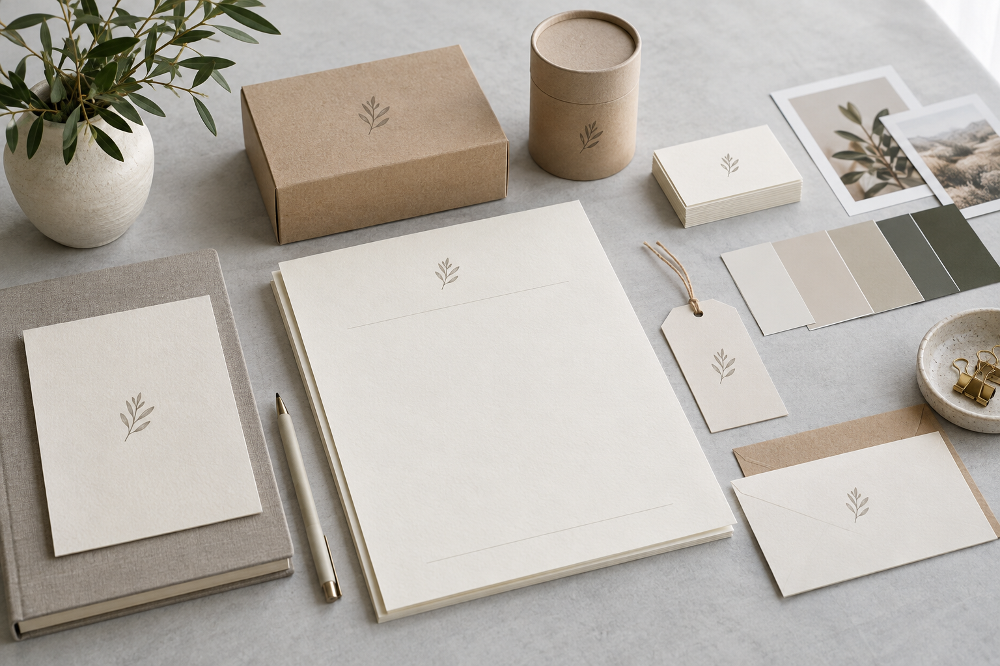

Cómo mantener una identidad visual coherente en tu negocio
Del logo a las redes y los empaques: organiza colores, tipografías y plantillas para que tu marca se reconozca en cada pieza.

La identidad visual va más allá del logo
Tu marca aparece en muchos lugares: una publicación, una propuesta, una carta, un empaque o un mensaje comercial. Cuando cada pieza utiliza criterios distintos, puede ser difícil reconocer que todas pertenecen al mismo negocio. Una identidad visual coherente da a tu equipo una base común para diseñar.
No significa que todo deba verse idéntico. Significa que exista una relación clara entre las piezas, incluso cuando cambian el formato, la fotografía o el mensaje.
Reúne los elementos que ya utilizas
Antes de rediseñar, reúne versiones del logo, colores, tipografías, fotografías y piezas recientes. Identifica cuáles siguen vigentes y cuáles fueron soluciones temporales. Revisa también si cuentas con los archivos editables y con los permisos de uso de las imágenes y fuentes.
Este inventario permite distinguir qué conviene conservar y qué necesita orden. No hace falta cambiar una identidad completa para corregir versiones inconsistentes del logo o plantillas difíciles de usar.
Establece reglas pequeñas pero claras
Define una paleta principal y colores de apoyo, las tipografías para títulos y textos, y versiones del logo para fondos claros y oscuros. Deja ejemplos de combinaciones legibles y de usos que deben evitarse, como deformar el símbolo o colocarlo sobre una fotografía sin contraste.
Incluye criterios para las imágenes: encuadres, iluminación y tratamiento. Las decisiones deben poder aplicarse con los recursos reales del negocio, no depender de una producción que el equipo no puede sostener.
Adapta el sistema a cada soporte
Una publicación se lee en pantalla; un empaque se observa a diferentes distancias y necesita información concreta del producto. Utiliza la misma identidad, pero ajusta la jerarquía y la cantidad de texto a cada soporte.
Antes de imprimir, revisa una prueba y confirma medidas, márgenes, acabados y legibilidad con el proveedor. En piezas digitales, comprueba el resultado en celular. Una composición que se ve bien en una pantalla grande puede tener textos demasiado pequeños en el uso cotidiano.
Crea plantillas que faciliten el trabajo
Prepara plantillas para las piezas que repites: presentación de servicios, preguntas frecuentes, promociones y propuestas comerciales. Indica qué zonas se pueden editar y qué elementos deben mantenerse.
Guarda los archivos vigentes en una carpeta compartida y distingue las versiones finales de los borradores. Asigna a una persona la revisión de nuevas piezas para evitar que cada publicación introduzca un estilo distinto.
Revisa la consistencia sin perder personalidad
Observa juntas varias publicaciones y materiales comerciales. Comprueba si el nombre se identifica, si los textos se leen y si las imágenes representan lo que ofreces. Pide a alguien que no participó del diseño que explique qué entiende de la pieza.
Si necesita demasiado contexto para comprenderla, ajusta el mensaje o la jerarquía. El diseño debe ayudar a comunicar tu propuesta, no competir con ella.
Hagamos que tu marca tome forma.
En Getpes trabajamos contenido, video, campañas digitales y diseño. Conoce nuestro trabajo o cuéntanos qué necesita tu negocio.
Conversemos Ver portafolio